Dacă păşeşti desculţ(ă) pe o pardoseală de ciment, îţi pare mai rece decât covorul de pe aceeaşi pardoseală.
Este oare într-adevăr mai cald covorul decât pardoseala pe care păşeşti?
Cum ai putea verifica aceasta?
Cât indică un termometru de cameră pus în jetul de apă rece de la robinet?
Dar în jetul de apă caldă de la acelaşi robinet?
Prepară cuburi de gheaţă în congelatorul frigiderului. Sfărâmă câteva cuburi de gheaţă într-un pahar şi pune în gheaţa sfărâmată un termometru de cameră.
Cât este de rece gheaţa?
Cât indică termometrul când gheaţa începe să se topească?
Construieşte un termometru ca cel pe care l-ai realizat la activitatea experimentală 2-3, dar de data aceasta nu mai turna lichid în sticluţă.
Cufundă în apă cu cerneală capătul inferior al tubului transparent al noului termometru. În tub rămâne o coloană de lichid colorat. Înşurubează capacul pe gâtul sticluţei goale (aceasta este de fapt plină cu... aer!).
Ţine termometrul strâns în palmă şi observă ce se întâmplă cu coloana de lichid.
Încălzirea produsă de contactul cu palma ta (mai caldă decât aerul din sticluţă) este suficientă pentru a deplasa considerabil coloana de lichid din tub. Termometrul cu aer este mult mai sensibil decât cel cu lichid!
Adaptează o cameră video pentru internet (webcam) la un microscop. Transferă astfel imaginile microscopului pe ecranul calculatorului!
Înregistrează într-un fişier mişcarea browniană a picăturilor de grăsime ale laptelui şi urmăreşte cantitativ deplasarea unora dintre acestea.
Care picături se agită mai intens: cele mari sau cele mici?
Mergând la întâmplare, te-ai putea aştepta ca deplasările într-un sens să fie compensate de deplasările în sens opus.
Dar nu există nici o "amintire" a deplasărilor precedente: fiecare poziţie este un nou început! După mulţi paşi, poziţia finală va fi - cel mai probabil - mai departe de poziţia iniţială!
Verifică aceasta trasând mersul la întâmplare pe o foaie cu pătrate. Marchează un pătrat în zona centrală a foii. De aici se poate ajunge printr-un pas într-unul dintre cele opt pătrate vecine (figura 1).
 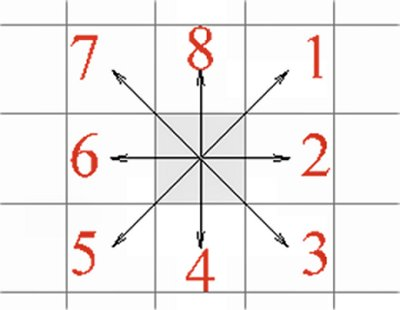
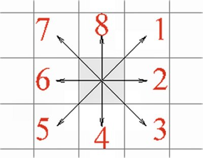
Figura 1. Dintr-un pătrat se poate ajunge print-un
pas într-unul dintre cele opt pătrate vecine.
Realizează un generator de numere întâmplătoare. Etichetează opt monezi identice, de la 1 la 8, pentru fiecare dintre cele opt posibilităţi de deplasare cu un pas.
Amestecă monezile într-un pahar de plastic şi extrage câte una, la întâmplare. Astfel, vei obţine la fiecare extragere câte un număr de la 1 la 8. Nu uita să pui la loc, de fiecare dată, moneda extrasă!
Efectuează 30 de extrageri şi marchează pe foaia cu pătrate, de fiecare dată, deplasarea într-un pătrat vecin, după regula din figura 1.
Căt este deplasarea după 30 de paşi?
Cât sunt deplasările obţinute de colegii tăi?
Compară traiectoria trasată pe foaie cu cea a unei particule browniene, ca cea din figura 3-6.
Mişcarea la întâmplare a două sute de particule a fost simulată cu ajutorul unui calculator. Iniţial, toate particulele se aflau în pătratul din centrul unui caroiaj (figura 2).
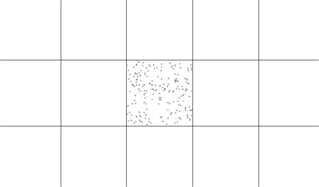
Figura 2. Două sute de particule se află iniţial în pătratul din centrul
caroiajului
La fiecare pas, fiecare particulă avansează, la întâmplare, pe o distanţă cât o zecime din latura unui pătrat al caroiajului. După o mie de paşi, particulele ajung în situaţia din figura 3.
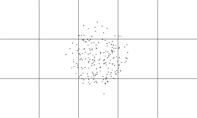
Figura 3. Situaţia particulelor după o mie de paşi.
După încă patru mii de paşi, particulele ajung în situaţia din figura 4.
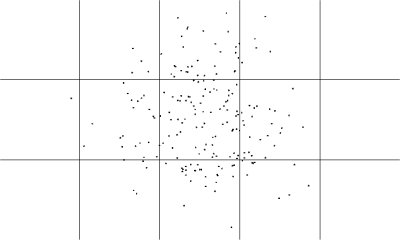
Figura 4. Situaţia particulelor după încă patru mii de paşi.
O sută de particule sunt "înghesuite" în zona centrală a unei cutii (punctele negre din figura 5). În cutie sunt răspândite alte o sută de particule (punctele gri).
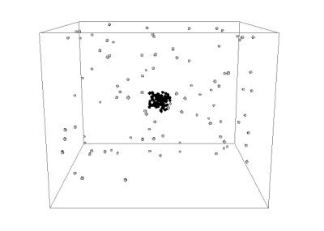
Figura 5. O sută de particule negre sunt concentrate în zona centrală
a unei cutii în care se află răspândite o sută de particule gri.
Cu ajutorul unui calculator a fost simulată mişcarea întâmplătoare a particulelor. După o mie de paşi, situaţia este cea prezentată în figura 6.
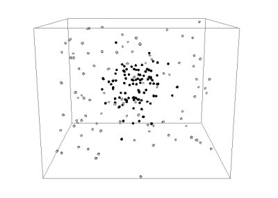
Figura 6. Situaţia particulelor după o mie de paşi.
După încă o mie de paşi, situaţia este cea prezentată în figura 7.
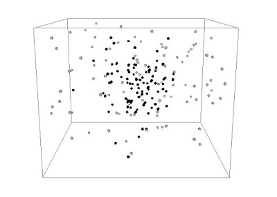
Figura 7. Situaţia particulelor după încă o mie de paşi.
Ce te aştepţi să se întâmple pe măsură ce continuă agitaţia întâmplătoare a particulelor?
Găseşti vreo asemănare cu răspândirea parfumului în aer sau a cernelii în apă?
Două sute de particule se află în jumătatea stângă a cutiei din figura 8.
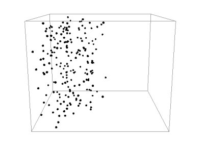
Figura 8. Două sute de particule se află iniţial în jumătatea stângă a
cutiei.
Cu ajutorul unui calculator a fost simulată mişcarea întâmplătoare a particulelor. După o mie de paşi, situaţia particulelor este cea prezentată în figura 9.
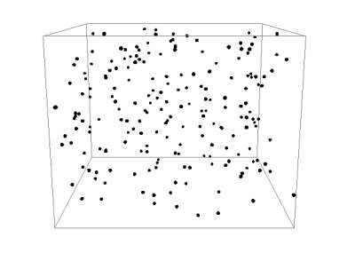
Figura 9. Situaţia particulelor după o mie de paşi.
Particulele sunt acum răspândite aproape uniform în interiorul cutiei. În acest moment, calculatorului i s-a cerut să inverseze vitezele tuturor particulelor, ca şi cum am da timpul înapoi! După încă o mie de paşi, situaţia particulelor este cea prezentată în figura 10.
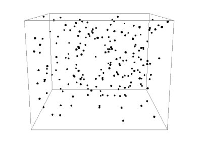
Figura 10. Situaţia particulelor după o mie de paşi de la inversarea
vitezelor.
Surprinzător, particulele sunt încă răspândite uniform în interiorul cutiei! Chiar dacă vitezele acestora au fost inversate, particulele nu se mai strâng la un loc în jumătatea stângă a cutiei!
Unii spun că nu putem da timpul înapoi, deoarece, chiar dacă am face ca totul să se mişte invers, lumea nu ar mai reveni la situaţia anterioară. Dar nimeni nu ştie sigur!
Care este părerea ta?
Dacă am putea privi tot mai de aproape o picătură de apă, am vedea detalii tot mai fine ale acesteia.
Fizicianul american Richard Feynman (figura 11) descrie o călătorie imaginară către detaliile din ce în ce mai fine ale unei picături de apă.
| 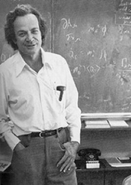 | Figura 11. Richard Feynman (1919−1988) |
Citeşte această minunată descriere în volumul I al cărţii sale "Fizica Modernă":
"...să presupunem că privim o picătură de apă cu diametrul de o jumătate de centimetru. Dacă privim foarte de aproape nu vedem nimic, decât apă - apă omogenă şi continuă. Să o mărim cu cel mai bun microscop optic disponibil, de vreo două mii de ori: atunci picătura de apă va avea diametrul aparent de aproximativ doisprezece metri, cam tot atât de mare cât o sală mare de clasă. Dacă am privi destul de aproape, încă am putea vedea apă relativ uniformă - dar ici şi colo mici lucruri de forma unor mingi de rugbi, înotând încoace şi încolo. Foarte interesant! Aceştia sunt paramecii. Ne-am putea opri în acest punct, devenind atât de curioşi în privinţa paramecilor, cu cilii fremătând şi corpurile lor care se răsucesc, încât să nu mergem mai departe, decât poate ca să mărim paramecii încă şi mai mult, ca să vedem în interiorul acestora. Acesta este, desigur, un subiect pentru biologie; dar trecem mai departe şi privim şi mai de aproape substanţa însăşi a apei, mărind-o de încă două mii de ori. Acum picătura de apă are aproximativ 24 de kilometri în diametru şi, dacă o privim foarte de aproape, vedem un fel de forfotă, care nu mai are aspect uniform - arată cam ca o mulţime de oameni la un joc de fotbal, văzuţi de la mare distanţă. Pentru a vedea ce este cu această forfotă, o vom mări de alte 25 de ori şi vom vedea ceva asemănător cu ceea ce este arătat în figura 12.
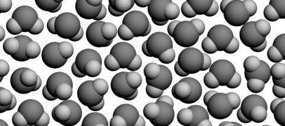
Figura 12. Apa, mărită de o sută de milioane de ori.
Aceasta este o imagine a apei, mărită de o sută de milioane de ori, dar idealizată în mai multe privinţ. În primul rând, particulele sunt desenate simplificat..."